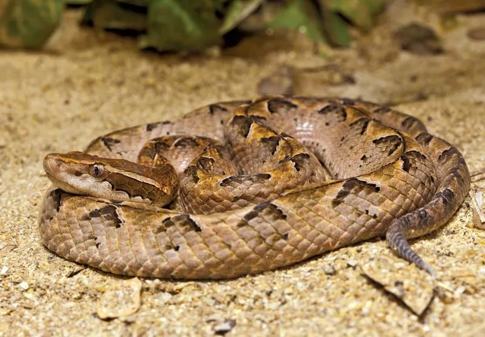
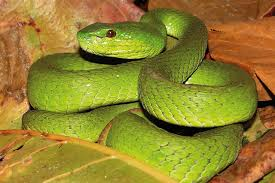
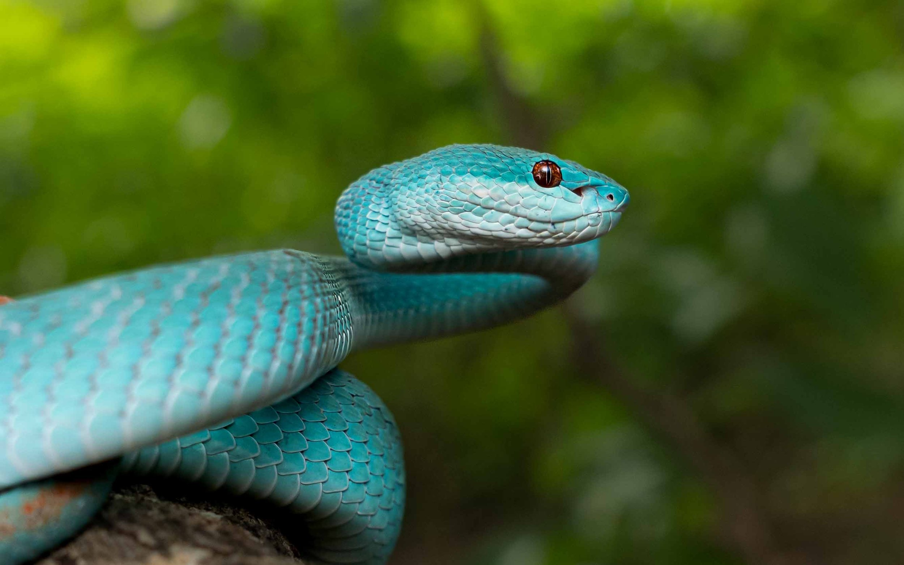
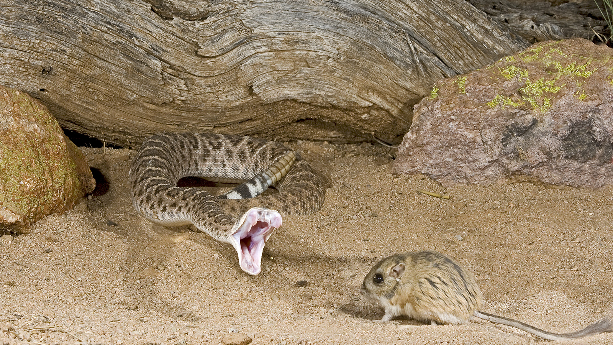

Pit vipers are a group of venomous snakes belonging to the subfamily Crotalinae, known for the distinctive heat-sensing pits located between their eyes and nostrils.
These pits allow them to detect infrared radiation from warm-blooded prey, making them effective nocturnal hunters.
Found across Asia, the Americas, and parts of Eastern Europe, common pit viper species include rattlesnakes, copperheads, cottonmouths, and various Asian pit vipers.
They are characterized by a triangular head, vertical pupils, and long, hinged fangs that deliver hemotoxic venom, causing tissue damage and blood clotting issues.
Pit vipers are typically ambush predators, feeding on small mammals, birds, and reptiles.
While some, like rattlesnakes, give warning signals before striking, pit viper bites can be life-threatening, requiring immediate medical attention and antivenom treatment.

Physical Characteristics
Pit vipers are easily recognized by their distinctive triangular-shaped heads, which are broader than their necks, and vertical, slit-like pupils adapted for low-light hunting.
A key feature is the presence of heat-sensing pit organs located between the eyes and nostrils on each side of the head, allowing them to detect the body heat of prey.
They possess long, hinged fangs that fold against the roof of the mouth when not in use and are capable of delivering potent venom deep into their prey.
They possess long, hinged fangs that fold against the roof of the mouth when not in use and are capable of delivering potent venom deep into their prey.
Their scales can be smooth or keeled, and coloration typically provides excellent camouflage, ranging from dull browns and greens to bright, vibrant hues, depending on the species and habitat.

Habitat
Pit vipers inhabit a wide range of environments, showcasing their adaptability.
They are commonly found in forests, grasslands, swamps, mountains, and deserts, depending on the species.
In the Americas, rattlesnakes prefer arid regions and rocky terrains, while some Asian pit vipers thrive in dense tropical forests.
Many species are terrestrial, living on the ground, while others, like certain Asian tree pit vipers, are arboreal, dwelling in trees.
Many species are terrestrial, living on the ground, while others, like certain Asian tree pit vipers, are arboreal, dwelling in trees.
Pit vipers are also known to live near human settlements, especially in agricultural areas, where food sources like rodents are abundant.

Diet and Behavior
Pit vipers are venomous snakes known for their heat-sensing pit organs, which help them detect warm-blooded prey.
Their diet mainly consists of rodents, birds, lizards, frogs, and insects, with juveniles preferring smaller prey like amphibians.
As ambush predators, they rely on camouflage and strike quickly, using venom to immobilize and digest their prey.
Pit vipers are generally solitary and nocturnal, hunting at night and remaining motionless for long periods while waiting for prey.
When threatened, they may hiss, coil, and strike defensively.
Some species are tree-dwelling, while others prefer the ground, and many give birth to live young.

Venom
Pit vipers possess highly potent hemotoxic venom, which primarily affects blood and tissue.
The venom disrupts blood clotting, causes internal bleeding, and leads to tissue damage around the bite area.
In some species, the venom may also have neurotoxic and myotoxic effects, impacting the nervous system and muscles.
The venom plays a crucial role in immobilizing prey and initiating digestion before consumption.
Symptoms of a pit viper bite can include pain, swelling, bruising, and in severe cases, organ damage or death if untreated.
However, with timely medical care and the administration of appropriate antivenom, most bites can be effectively treated.